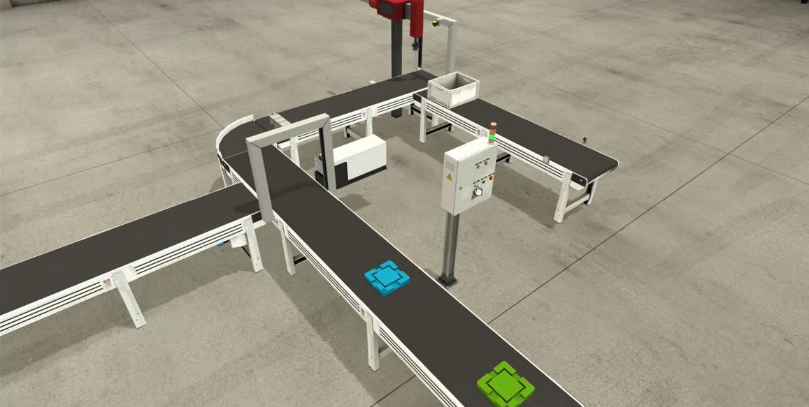

PLC Programming
PLC ProgrammingDevelopment of industrial PLC control systems for automated production lines. This includes designing ladder logic programs to control conveyor movement, sensors, actuators, and sequencing operations to ensure smooth and reliable automation processes.
 Mechanical Design
Mechanical DesignDesign and development of mechanical systems such as labelling units, boxing mechanisms, and conveyor structures. Focus is given to durability, precision, and integration with automated production environments.
 IoT Monitoring
IoT MonitoringImplementation of real-time monitoring systems using Node-RED dashboards. This allows live data visualization, system performance tracking, and remote diagnostics to improve operational efficiency and reduce downtime.

Electrical Design
Design of industrial electrical systems including control panels, wiring diagrams, and PLC input/output integration. Ensures safe, efficient, and compliant operation of automated machinery systems.

System IntegrationIntegration of mechanical, electrical, and control systems into a unified automated production line. Ensures seamless communication between all subsystems for stable and continuous operation.